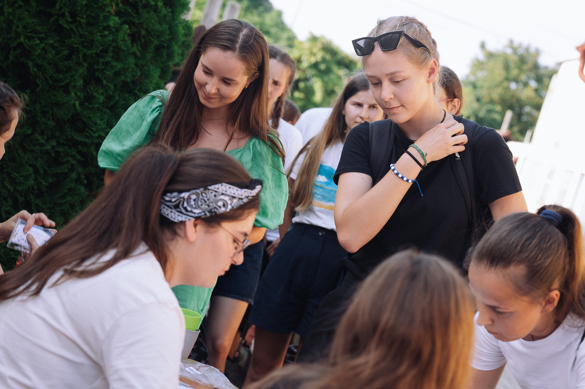
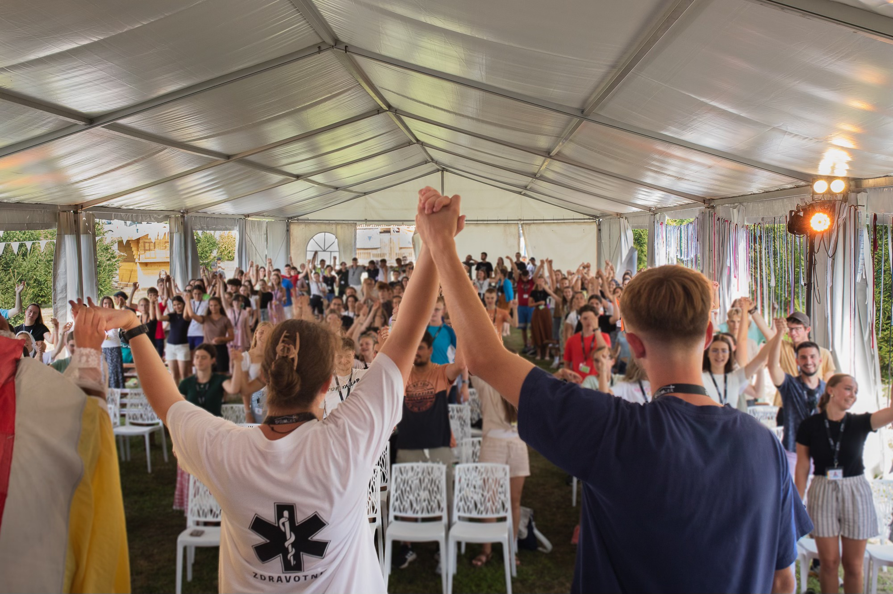

Podporte nás
Za tieto peniaze si vieme požičať bezpečný programový stan na Festival radosti.
Cieľ zbierky: 3900 €
Aktuálne vyzbierané: 0 €
Aktualizujeme manuálne každých pár dní
Chcem prispieť
Spôsob platby:
Kliknutím na tlačidlo budete presmerovaný do bankovej aplikácie na vašom mobile, alebo na webovú stránku s QR kódom a údajmi o platbe.
Údaje pre manuálnu platbu (prevod na účet):
IBAN: SK52 1100 0000 0029 4304 5043
Variabilný symbol: 20259999
Správa pre prijímateľa: Prispevok na cinnost. Festival radosti

